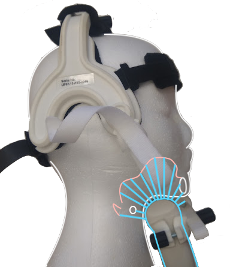
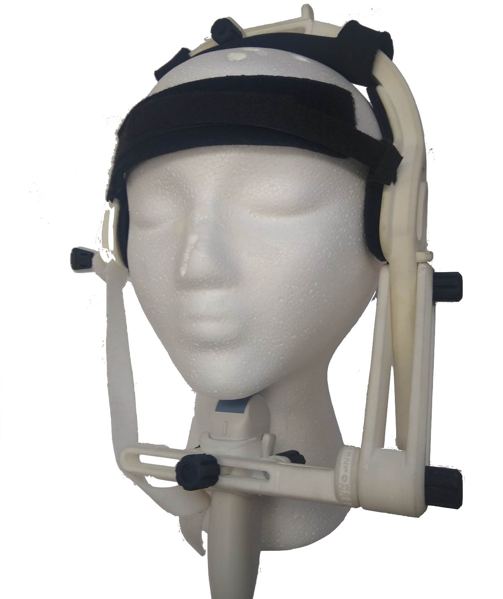
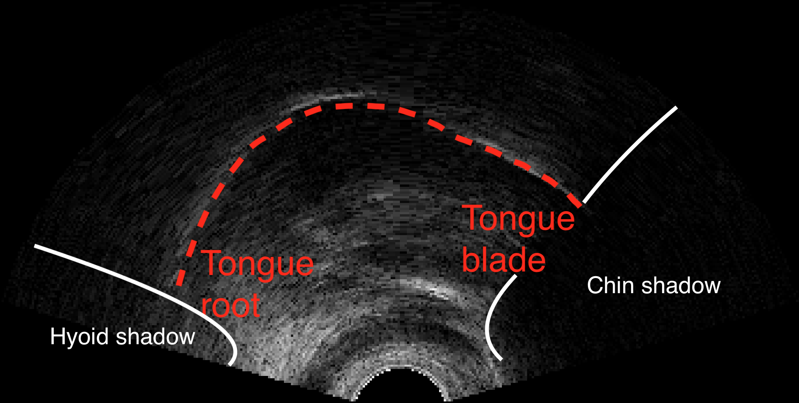
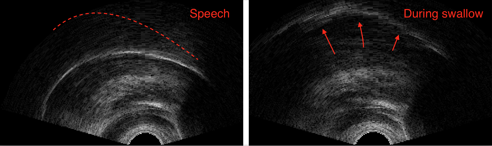
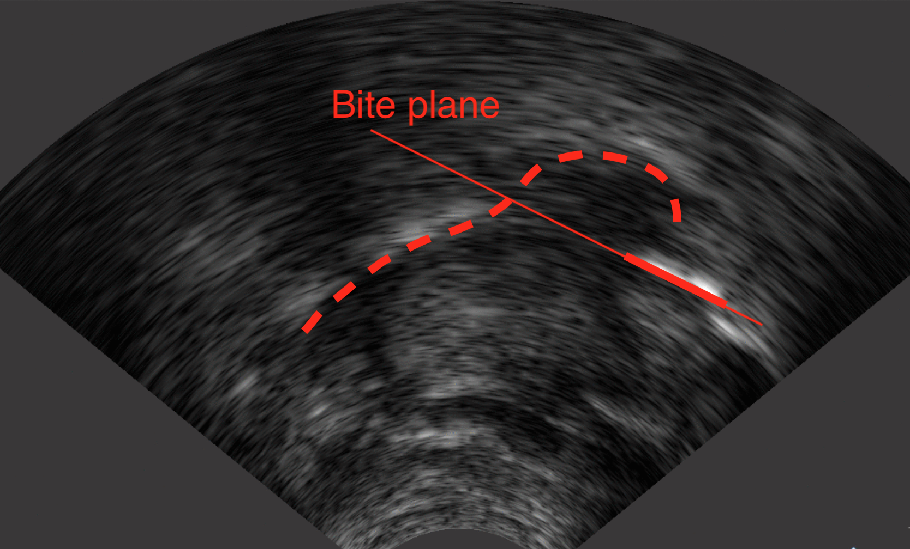
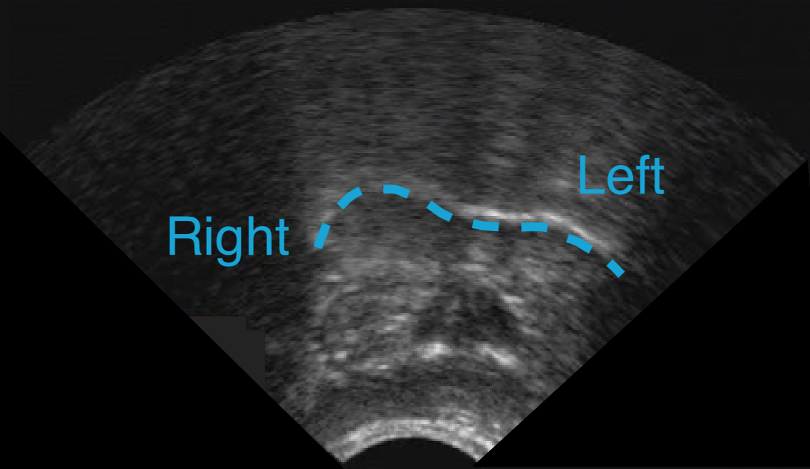
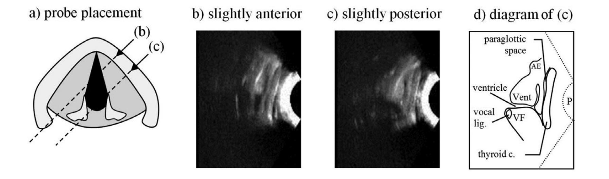
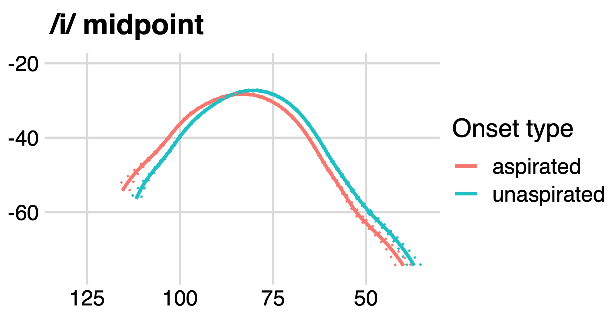
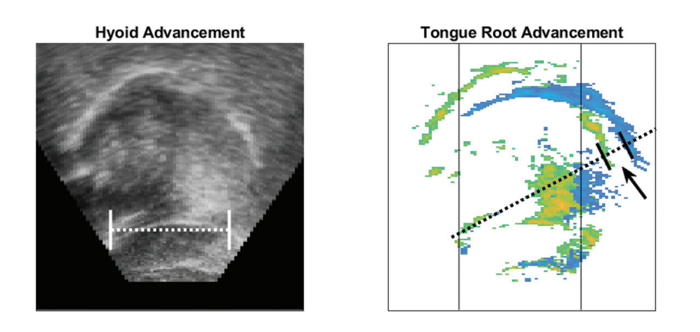
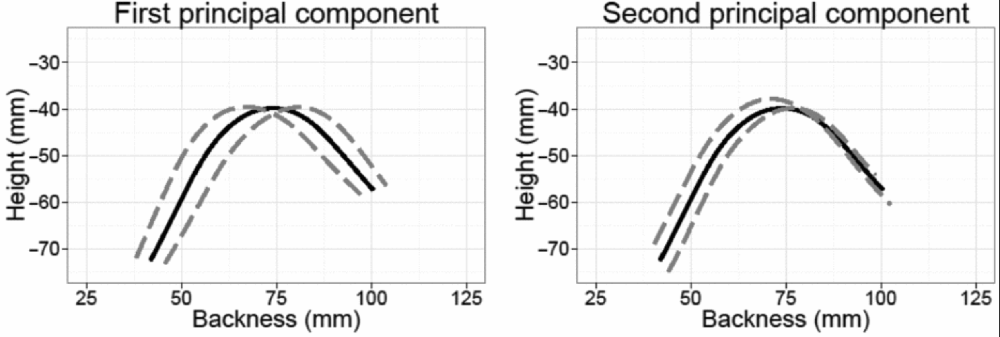

Matthew Faytak
University at Buffalo
Ultrasound as a means of collecting information on tongue position
Common features extracted from data
Low intensity, very high frequency sound is transmitted through soft tissue (pictured: blue) and reflects back when the density of the medium changes

Frame of reference must be fixed during recording to compare tongue positions; if it is not, motion of probe must be corrected e.g. Whalen et al (2004); Mielke et al (2005)

Video slowed down by four times; anterior is to the right
Reflection signal from tongue surface shows up as a bright contour; useful part is between two “shadows”

Due to chin shadow, tongue tip is usually not visible in ultrasound data
Often collected prior to recording
Palate trace, by doing a swallow task: swallow water and watch as tongue suctions to roof of mouth

Bite plane, by having the speaker bite down on a rigid plate and press tongue up into it Scobbie et al (2011)

While it’s not our focus, ultrasound can be taken in non-sagittal planes

Image modified from Mielke et al (2011)
Also not our focus, but possible

image from Moisik et al (2014)
Generally used for imaging posture or shape of the tongue from root to blade, and change over time
A critical tool for imaging vocal tract configurations in the field, outside of the lab Gick (2002)
Only images the tongue; no simultaneous imaging of hard palate possible; no imaging of larynx or velum
Image can be noisy, and not every potential participant images well
Perhaps the biggest drawback is the data itself: raw reflectivity information; requires extensive post-processing
Feature extraction: complex image processing, often requires manual intervention
Next lecture: feature projection methods
By far the most commonly extracted feature for ultrasound data Iskarous (2005); Stone (2005)
All current contour extraction methods are at least partly automated Roon et al (2021)
Some additional manual intervention required: frame-to-frame tracking drifts away from ground truth
Contour extraction has improved substantially in recent years; often close to manually drawn contours Roon et al (2021)
Several options for further processing of contours
Most common: model contour location and overlap using:

figure from Weller et al. (to appear)
The shape and curvature parameters of contours can also be measured
Importantly, these methods work even when the probe is not stabilized
Motion of certain parts of contours can be subjected to further feature extraction by drawing registration lines and tracking movement along those lines Gick et al (2006); Pouplier (2008); many others

Dimensionality reduction methods such as PCA can also be applied to reveal variation in contour position Turton (2015); Bennett et al (2018); Strycharczuk et al (2021)

Lightweight method, relatively user-friendly
Because of these factors it has few competitors for fieldwork
The data format:
The usual feature extraction methods:
Various ways around the contour problem: other features to extract
Going in the direction of feature engineering
Allen, B., Pulleyblank, D., & Ajíbóyè, Ọ. (2013). Articulatory mapping of Yorúbà vowels: an ultrasound study. Phonology, 30(2), 183-210. DOI
Bennett, R., Chiosáin, M., Padgett, J., & McGuire, G. (2018). An ultrasound study of Connemara Irish palatalization and velarization. Journal of the International Phonetic Association, 48(3), 261-304. DOI
Chiu, C., & Sun, J. (2020). On pharyngealized vowels in Northern Horpa: An acoustic and ultrasound study. The Journal of the Acoustical Society of America, 147(4), 2928–2946. DOI
Coretta, S. (2020). Longer vowel duration correlates with greater tongue root advancement at vowel offset: Acoustic and articulatory data from Italian and Polish. The Journal of the Acoustical Society of America, 147(1), 245-259. DOI
Coretta, S. (2019). Assessing mid-sagittal tongue contours in polar coordinates using generalised additive (mixed) models. OSF Preprint. DOI
Davidson, L. (2006). Comparing tongue shapes from ultrasound imaging using smoothing spline analysis of variance. The Journal of the Acoustical Society of America, 120, pp. 407–415. DOI
Dawson, K., Tiede, M. & Whalen, D. (2016). Methods for quantifying tongue shape and complexity using ultrasound imaging. Clinical Linguistics & Phonetics, 30(3-5), 328-344. DOI
Evans, J., Sun, J., Chiu, C. & Liou, M. (2016). Uvular approximation as an articulatory vowel feature. Journal of the International Phonetic Association, 46(1), 1–31. DOI
Gick, B. (2002). The use of ultrasound for linguistic phonetic fieldwork. Journal of the International Phonetic Association, 32(2), 113–121. DOI
Gick, B., Pulleyblank, D., Campbell, F., & Mutaka, N. (2006). Low vowels and transparency in Kinande vowel harmony. Phonology, 23(1), 1–20. DOI
Gick, B., Campbell, F., Oh, S. & Tamburri-Watt, L. (2006). Toward universals in the gestural organization of syllables: A cross-linguistic study of liquids. Journal of Phonetics, 34(1), 49-72. DOI
Gu, C. (2014). Smoothing spline ANOVA models: R package gss. Journal of Statistical Software, 58, 1-25. DOI
Heyne, M., Derrick, D., & Al-Tamimi, J. (2019). Native language influence on brass instrument performance: An application of generalized additive mixed models (GAMMs) to midsagittal ultrasound images of the tongue. Frontiers in Psychology, 2597. DOI
Howson, P. & Kochetov, A. (2020). Lowered F2 observed in uvular rhotics involves a tongue root gesture: Evidence from Upper Sorbian. The Journal of the Acoustical Society of America, 147(4), 2845–2857. DOI
Hudu, F. (2014). [ATR] feature involves a distinct tongue root articulation: Evidence from ultrasound imaging. Lingua, 143, 36–51. DOI
Hussain, Q. & Mielke, J. (2021). An acoustic and articulatory study of rhotic and rhotic-nasal vowels of Kalasha. Journal of Phonetics, 87, 101028. DOI
Iskarous, K. (2005). Detecting the edge of the tongue: A tutorial. Clinical Linguistics & Phonetics, 19(6-7), 555-565. DOI
Kirkham, S., & Nance, C. (2017). An acoustic-articulatory study of bilingual vowel production: Advanced tongue root vowels in Twi and tense/lax vowels in Ghanaian English. Journal of Phonetics, 62, 65–81. DOI
Laporte, C. (2018). Speech and Language Ultrasound Research Package (SLURP). GitHub
Laporte, C. & Ménard, L. (2018). Multi-hypothesis tracking of the tongue surface in ultrasound video recordings of normal and impaired speech. Medical Image Analysis, 44, 98-114. DOI
Lee-Kim, S., Kawahara, S., & Lee, S. (2014). The ‘whistled’ fricative in xiTsonga: Its articulation and acoustics. Phonetica, 71(1), 50–81. DOI
Li, M., Kambhamettu, C. & Stone, M. (2005). Automatic contour tracking in ultrasound images. Clinical Linguistics & Phonetics, 19(6-7), 545–554. DOI
Lulich, S. & Ćavar, M. (2019). Phonetics of Polish “soft”-“hard” vowel allophony. The Journal of the Acoustical Society of America, 146(4), 2263-2278. DOI
Matsui, M. & Kochetov, A. (2018). Tongue root positioning for voicing vs. contrastive palatalization: An ultrasound study of Russian word-initial coronal stops [有声性対立のための舌根調音と硬口蓋化子音対立の関係―ロシア語語頭舌頂閉鎖音の超音波画像解析―]. 音声研究, 22(2), 81-94. DOI
Mielke, J., Olson, K., Baker, A. & Archangeli, D. (2011). Articulation of the Kagayanen interdental approximant: An ultrasound study. Journal of Phonetics, 39(3), 403-412. DOI
Mielke, J., Baker, A., Archangeli, D., & Racy, S. (2005). Palatron: a technique for aligning ultrasound images of the tongue and palate. Coyote Papers, 14, 96-107. PDF
Miller, A. (2016). Posterior lingual gestures and tongue shape in Mangetti Dune !Xung clicks. Journal of Phonetics, 55, 119–148. DOI
Moisik, S., Lin, H., & Esling, J. (2014). A study of laryngeal gestures in Mandarin citation tones using simultaneous laryngoscopy and laryngeal ultrasound (SLLUS). Journal of the International Phonetic Association, 44(1), 21-58. DOI
Percival, M., Kochetov, A. & Kang, Y. (2018). An ultrasound study of gemination in coronal stops in Eastern Oromo. In Proceedings of Interspeech 2018, 1531-1535. DOI
Pouplier, M. (2008). The role of a coda consonant as error trigger in repetition tasks. Journal of Phonetics, 36(1), 114-140. DOI
Roon, K., Chen, W., Iwasaki, R., Kang, J., Kim, B., Shejaeya, G., Tiede, M. & Whalen, D. (2021). Comparison of auto-contouring and hand-contouring of ultrasound images of the tongue surface. Clinical Linguistics & Phonetics, 1-20. DOI
Scobbie, J., Lawson, E., Cowen, S., Cleland, J. & Wrench, A. (2011). A common co-ordinate system for mid-sagittal articulatory measurement. QMU CASL Working Papers, 20. PDF
Shaw, J., Carignan, C., Agostini, T., Mailhammer, R., Harvey, M., & Derrick, D. (2020). Phonological contrast and phonetic variation: The case of velars in Iwaidja. Language, 96(3), 578–617. PDF
Spreafico, L., Pucher, M. & Matosova, A. (2018). UltraFit: A speaker-friendly headset for ultrasound recordings in speech science. In Proceedings of Interspeech 2018, 1517-1520. PDF
Stone, M. (2005). A guide to analysing tongue motion from ultrasound images. Clinical Linguistics & Phonetics, 19(6-7), 455-501. DOI
Strycharczuk, P., Ćavar, M., & Coretta, S. (2021). Distance vs time. Acoustic and articulatory consequences of reduced vowel duration in Polish. The Journal of the Acoustical Society of America, 150(1), 592-607. DOI
Strycharczuk, P. & Sebregts, K. (2018). Articulatory dynamics of (de)gemination in Dutch. Journal of Phonetics, 68, 138-149. DOI
Tabain, M., & Beare, R. (2018). An ultrasound study of coronal places of articulation in Central Arrernte: Apicals, laminals and rhotics. Journal of Phonetics, 66, 63–81. DOI
Tiede, M. (2021). GetContours [v3.5]. GitHub
Turton, D. (2015). Determining categoricity in English /l/-darkening: A principal component analysis of ultrasound spline data. In Proceedings of ICPhS 18. PDF
Weller, J., Faytak, M., Steffman, J., Mayer, C., Teixeira, G. & Tankou, R. (to appear). Supralaryngeal articulation across voicing and aspiration in Yemba vowels. In Proceedings of ACAL 51/52.
Whalen, D., Iskarous, K., Tiede, M., Ostry, D., Lehnert-LeHouillier, H., Vatikiotis-Bateson, E. & Hailey, D. (2004). The Haskins optically‐corrected ultrasound system (HOCUS). Journal of Speech, Language, and Hearing Research, 48, 543-553. DOI
Whalen, D., Shaw, P., Noiray, A. & Antony, R. (2011). Analogs of Tahltan consonant harmony in English CVC syllables. In Proceedings of ICPhS 17, 2129-2132. PDF
Zharkova, N., Gibbon, F. & Hardcastle, W. (2015). Quantifying lingual coarticulation using ultrasound imaging data collected with and without head stabilisation. Clinical Linguistics & Phonetics, 29(4), 249-265. DOI